Simple and Easy Recipes
Food Review!!! / Yes from our Yellowstone and Las Vegas Trip
© 2016 Spicy World, Published on: Jul 19, 2016
Finally I am uploading the food pictures, which we have enjoyed during our last trip to Yellowstone National Park. We went there at the end of May, it was a 7 days long trip. For me (as a food blogger) apart from trip, food has to be the second main attraction. From first day to last day of this trip, we had some delicious food and experiences. Let us share our experience with you.

We started our journey from Las Vegas airport and had our lunch from Baja Fresh (mexican grill). Our order ($20) were - Ultimo Chicken Burrito and Chicken Quesadilla with Tortilla chips. Everything was delicious, fresh and warm. Price of the food was reasonable (with respect to the inside Airport) and their service was very quick.
 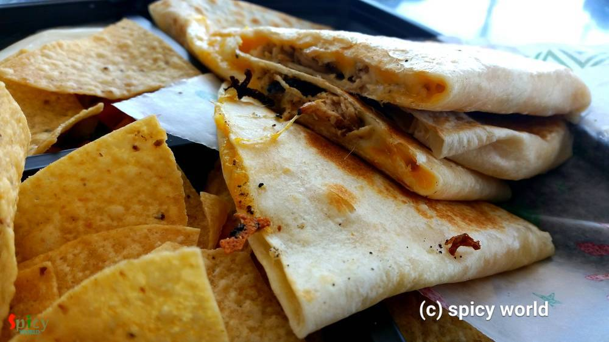
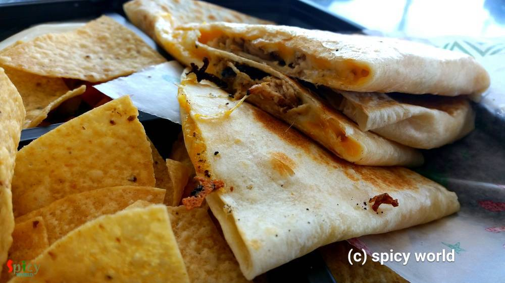After that during our travel we stopped 2 times for quick lunch at a chain restaurant, named 'Costa Vida'. This is also a mexican grill. We ordered - Chicken Burrito, Grilled Chicken Nachos and Chicken Rice Bowl. They made everything in front of our eyes. The quantity was sufficient, loads of sauces and delicious cheese. We loved their service and food.
 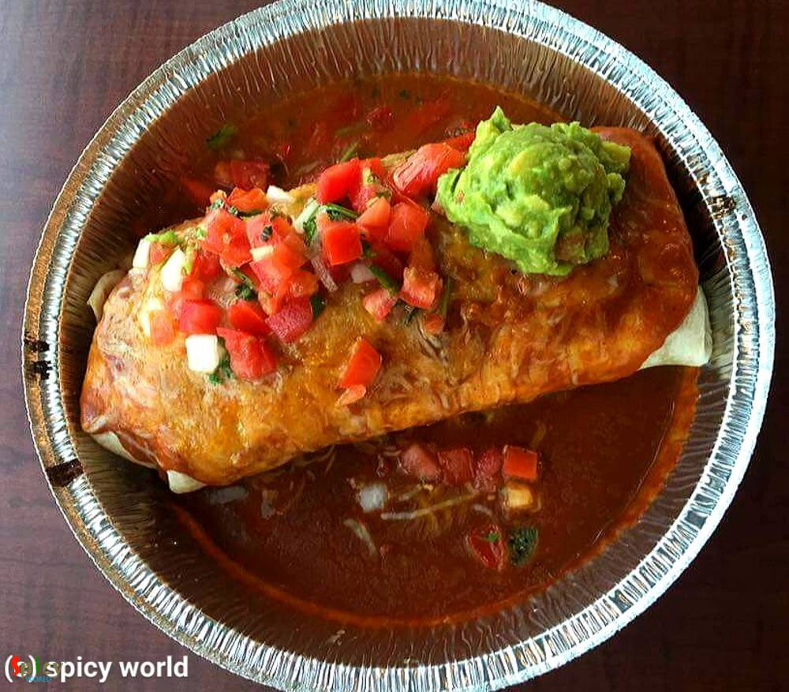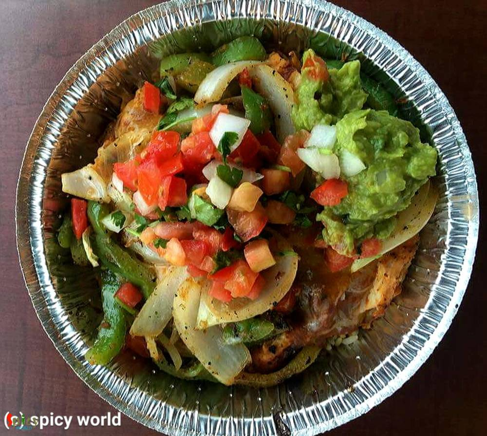
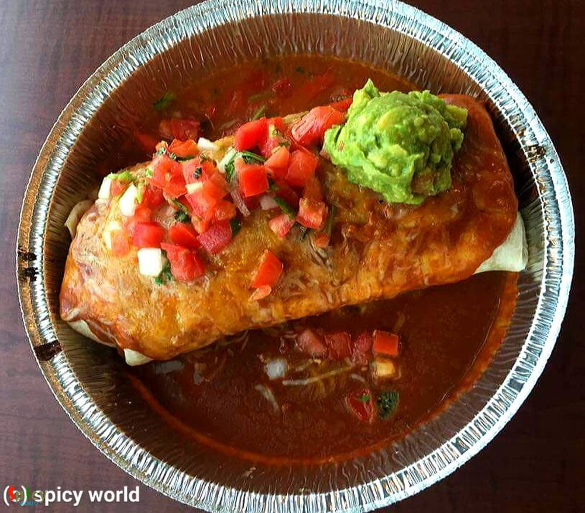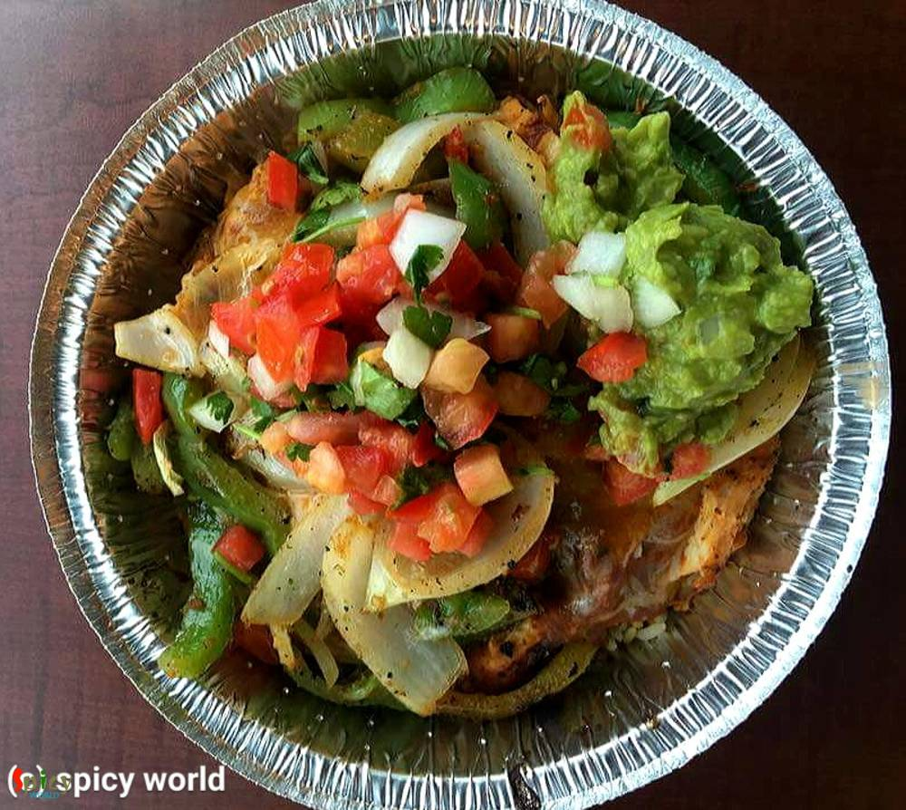We went to the west entrance of Yellowstone National park. It was lunch time when entered, so we first had our scrumptious lunch - the Wrangler Pizza at 'Petes Rocky Mountain Pizza'. Ohh, it was so good that I can still remember the taste. We just told them to change BBQ sauce with some hot sauce. The pizza was little overpriced ($21) but as its a tourist spot the price make sense.
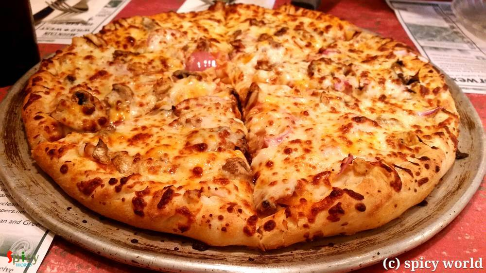On the same day we had our dinner at the same street where we had the lunch. There was a BBQ restaurant named 'Beartooth Barbecue', just opposite of that pizza joint we ate in the morning. The place will give you a rustic feeling. Our order ($26) and we ordered - 2 Pulled Chicken Sandwich with fries, baked beans and cokes. Their 'housemade' BBQ sauce and hot sauce were great. We thoroughly enjoyed the food, only observation, the baked beans, it was way too sweet for our taste. Otherwise our server was very friendly and energetic.
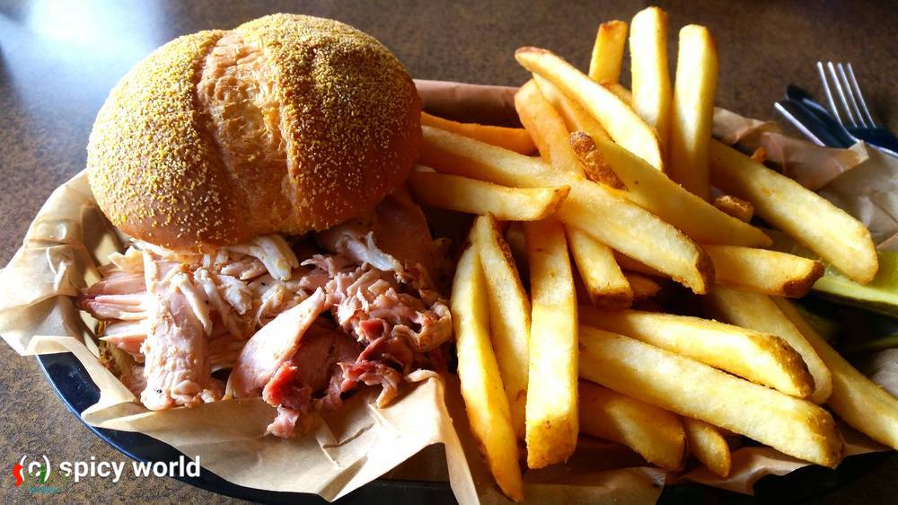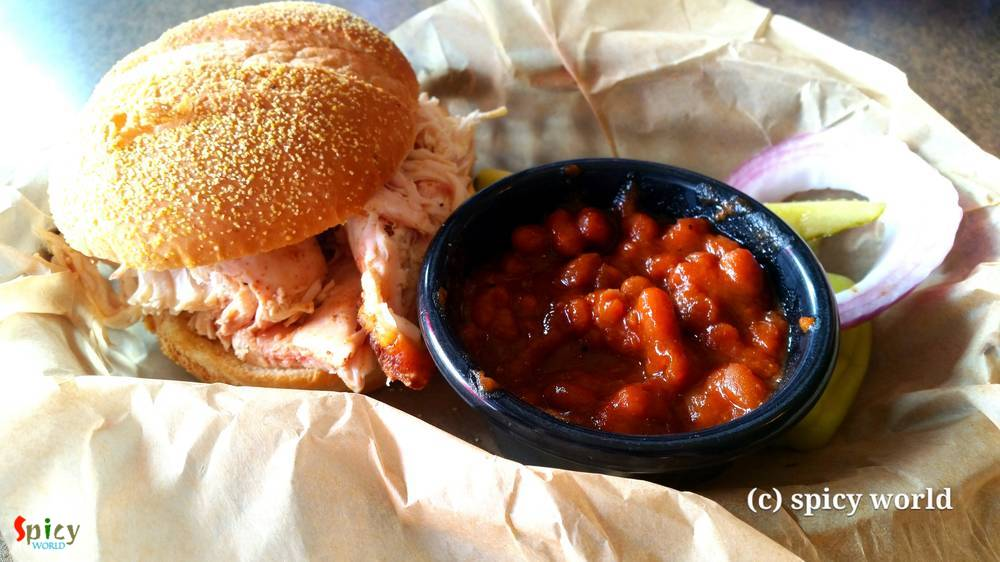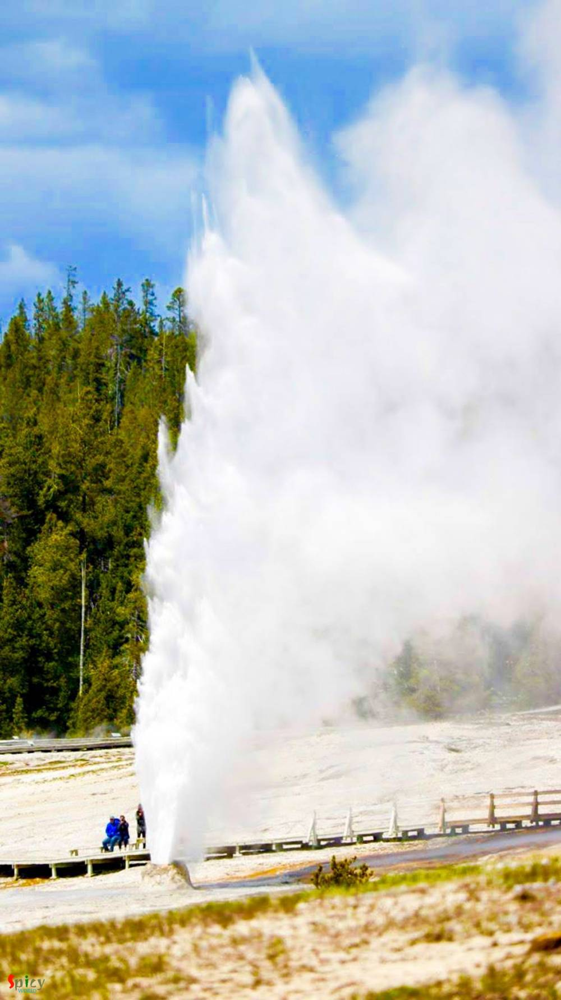Last 2 days of our trip we stayed at Stratosphere, Las Vegas as we cancelled our Grand Canyon trip because we were not only tired but also excited to enjoy Vegas again. Our first dinner was at 'International Eatery Fremont Street'. Its a kind of Food Court and has 3 options Chinese, Mexican and Italian. We tried 'Philly cheese Chicken with fries' and 'Fish and Chips' from Dino's Little Italy. Their food was hot and fresh. The place is so popular and always filled up with tons of people.


Then on the next day we tried a local restaurant named 'Margaritaville' for lunch. It was one of the busiest place upon the Las Vegas strip. We ordered ($48) - a Volcano Turkey Burger and a Fish Sandwich with a coke and a beer. Food was delicious but little overpriced. Our server also didn't refill my coke!!!
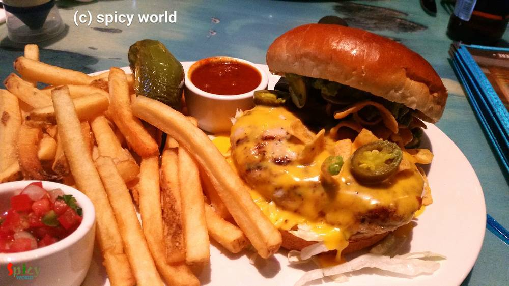
At the very last day before going to the airport, we had brunch at a very common place - IHOP. It was the closest one from our hotel. We ordered ($20) a tropical lemonade, a coffee, a chicken and spinach breakfast quesedilla. Everything was great, fresh and hot. The place had waiting line but their service was very good.


I hope these information will help you guys whenever you are traveling to these places. 'A Trip with Nature' is our another blog which will provide you more information about the trip. There are many more good restaurants which we missed or didn't get chance to give a try. So, I would very much like to know some of your favorite restaurants from these places .... until then Gooood Byyyyyeee !
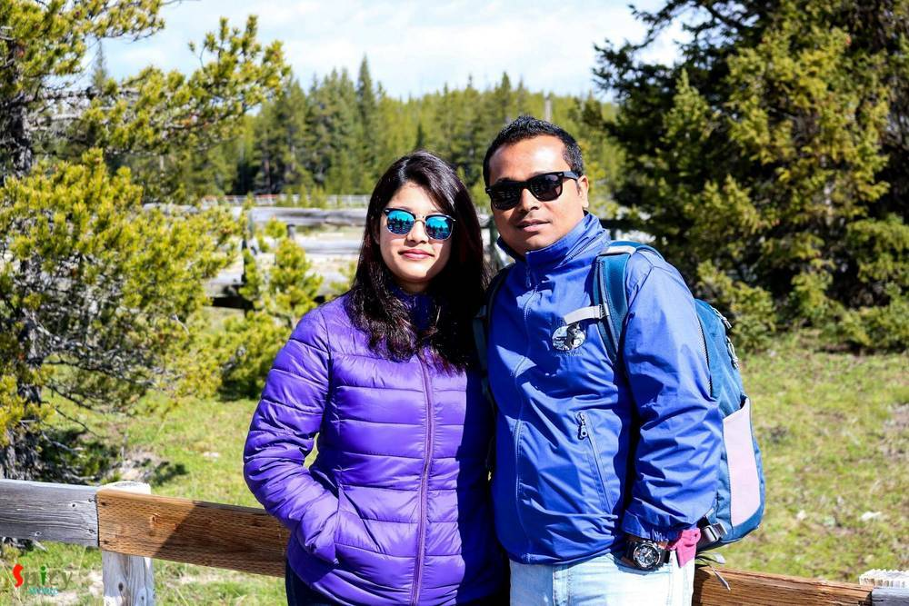Tags:travel